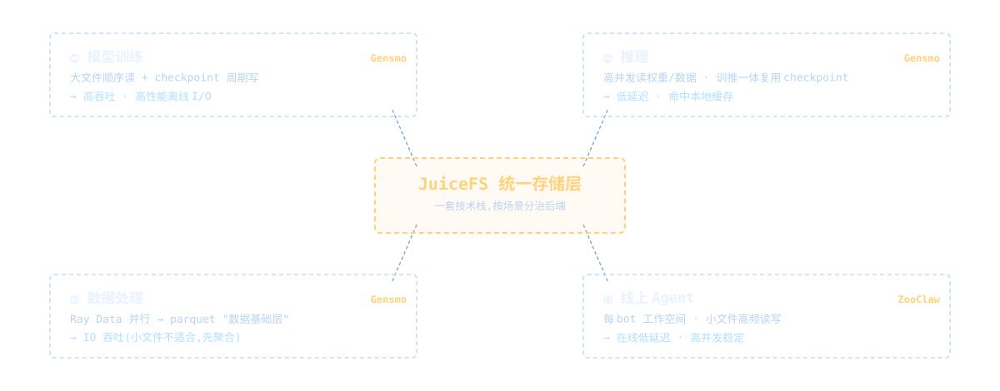
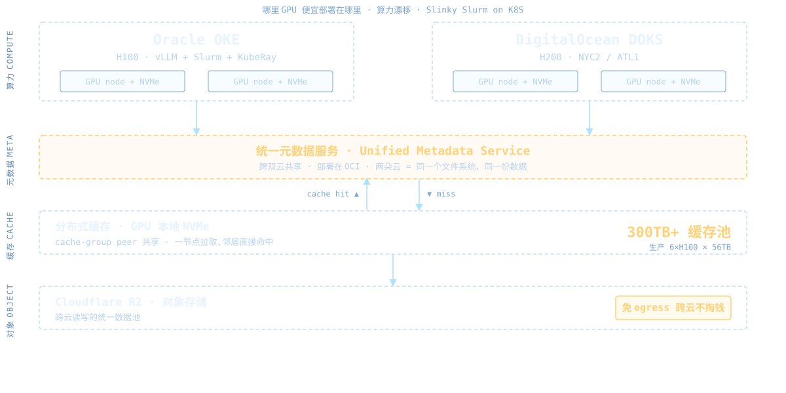
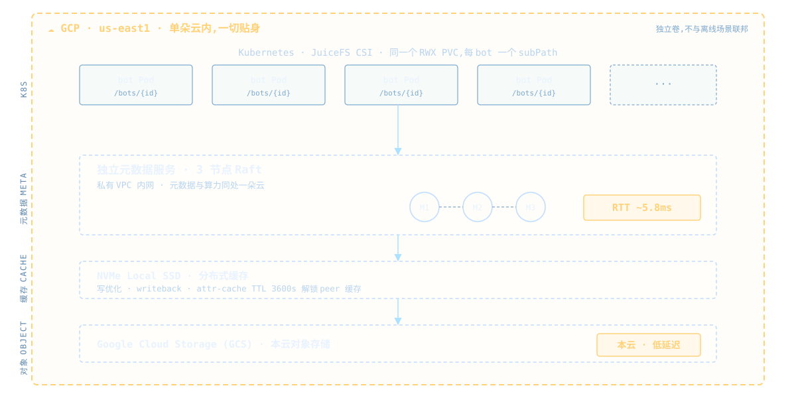
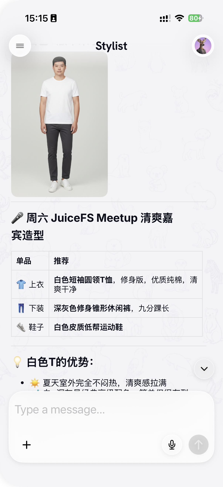

JuiceFS Shanghai Meetup · Talk 2 · 星辰征途
面向多云多模态 AIGC 业务的
统一存储实践
一套云中立的统一存储 · 全场景分治优化 · 低成本 × 高性能
// 我们是谁 · 生产规模
星辰征途:AI 搜索 + 电商场景的 多模态 AIGC 公司
这套存储支撑我们两个 AI Agent 方向的产品 · Gensmo(时尚试穿 / 离线训练 · 推理 · 数据处理)+ ZooClaw(通用 / 在线 Agent 团队)
3
朵云
Oracle · DigitalOcean · GCP
agenda
今天的内容
01统一存储需求与建设思路~5min
02选型:从 GCS Fuse / S3 Fuse 到 JuiceFS~5min
03新架构:JuiceFS 在多云的部署(双场景)~7min
04实践:分布式缓存 / writeback / S3 Gateway~8min
05总结与 Q&A~3min
// part 01 · 需求
四类场景,四种 I/O 诉求

共同诉求:低成本 · 云中立 · 离线高吞吐 · 线上高并发 · 对象接口
// part 01 · 建设思路
云中立不是理念,是议价能力
🖥️ 离线:跟着最便宜的 GPU 走
哪里 GPU 便宜,算力就部署到哪里。存储统一在 JuiceFS 上 = "移动计算、共享存储"。
💻 在线:跟着最便宜的 CPU VM 走
哪里 VM 便宜就部署到哪里。今天 GCP,明天可能 Azure 或任意更便宜的 region。
工程基座:统一 Terraform 编排 + K8S → 换云一键拉起,存储层零改动。
// part 01 · 数据处理思路 + 开发者体验
数据基础层 + 透明的 POSIX 体验
🔁 处理一次,复用多次
Ray Data 并行(KubeRay / Slurm)把海量小文件预处理成 parquet 大文件(单文件 10万~100万行),做下游 embedding/检索/推荐的"数据基础层"。
🗂️ 整个 /data/srp 透明挂载
代码里看不到 "JuiceFS" 字样,只用普通 POSIX 路径。开发机和集群同一套路径,所有数据当成一块本地盘。
对工程师而言,最好的多云存储,是让他们感觉不到"多云"、也感觉不到"存储"——只有一块永远在那儿的本地盘。
// part 02 · 离线选型
离线:调研业界主流方案后,一开始就选了 JuiceFS
| 方案 | 云中立 | POSIX | 高吞吐 | 分布式缓存 | 成本/运维 |
|---|
| 自建并行 FS(比如 Lustre) | ❌ 绑硬件 | ✅ | ✅✅ | 部分 | 贵 / 重 |
| 云托管并行 FS(比如 FileStore) | ❌ 锁单云 | ✅ | ✅ | ✅ | 贵 / 轻 |
| 对象存储 + FUSE(S3FS/GCS Fuse) | ⚠️ 锁云 | ❌ | ❌ | ❌ | 便宜 / 轻 |
| 缓存编排层(Alluxio/Fluid) | ✅ | ✅ | ✅ | ✅ | 需叠底层 / 重 |
| JuiceFS | ✅ 后端任选 | ✅ 完整 | ✅ | ✅ 内建 | 对象成本 / CSI |
// part 02 · Agent 选型
Agent:从 GCS Fuse 踩坑,迁到 JuiceFS
💥 SIGKILL 丢数据
异步 write-back,数据还在本地缓冲就被 OOM kill → 永久丢失。对象存储没有 fsync 语义。
🐌 小文件高延迟
每次 open/stat 加 50-200ms;POSIX 语义不全(rename/flock/symlink)。
🔒 被云绑定
GCS Fuse 只能 GCP 内用 + 高并发不稳定 → 直接违背云中立。
// part 02 · 为什么 JuiceFS 能解
差别在那层独立的元数据引擎
❌ GCS Fuse:写成功 ≠ 落地
write() 返回 → 数据还在本地异步缓冲 → 刷盘前 crash → 丢失窗口。
✅ JuiceFS:写成功 = 已落地
数据 chunk 先上传对象存储 → 元数据原子提交 → 才返回成功。SIGKILL 不丢已确认数据。
FUSE 系是"把对象存储伪装成文件系统";JuiceFS 是"用对象存储做一个真正的文件系统"。
// part 03 · 架构 A · 离线跨云
离线:多云算力漂移,统一元数据 + R2

// part 03 · 架构 B · 在线 Agent
在线:单云贴身,独立元数据 + GCS

// part 03 · 为什么相反
同一个 JuiceFS,相反的决策
| 维度 | 离线跨云 | 在线 Agent |
|---|
| 首要目标 | 算力漂移、跨云共享 | 在线低延迟、高并发稳定 |
| 元数据 | 统一(跨云共享一份) | 独立(单云内网 Raft) |
| 对象存储 | R2(免 egress) | GCS(本云低延迟) |
| 取舍逻辑 | 跨云不掏 egress 费 | 元数据/数据贴着算力,压低 RTT |
① 云中立 ≠ 一个后端打天下,而是有能力按场景选最优后端,上层零改动。
② 元数据局部性,是性能的地板。
// part 04 · 实践 · 分布式缓存
同一个缓存,两套优化策略
| 配置 | 离线 Slurm(读优化) | 在线 Agent(写优化 + 元数据调优) |
|---|
| 缓存容量 | cache-size=-1(用满整盘) | cache-size≈600GB(双 NVMe) |
| 元数据 TTL | 默认,不调 | attr/entry/dir 提到 3600s |
| writeback | 不开 | 开 |
| 特殊 | 流式只读用 cache-size=0 | prefetch / open-cache / timeout=10 |
模型是 provider/consumer:GPU 节点组 cache-group 共享缓存块,客户端 --no-sharing 只读。
反直觉坑:attr-cache TTL 太短会"杀死"分布式缓存 → 1s 提到 3600s,peer 间稳定 7-15 MB/s。
// part 04 · 实践 · 离线性能实测
离线实测:写吞吐 ~4×,缓存命中读 7-8 GB/s
| 测试项(JuiceFS on R2 · 离线) | 无优化基线 | 优化后(分布式缓存 + 调参) |
|---|
| 顺序写 · 大块 | ~231 MB/s | ~714 MB/s |
| 顺序写 · 大批量 20-50GB | ~256-265 MB/s | 840 MB/s ~ 1.1 GB/s |
| 顺序读 · 分布式缓存命中 | — | 6.7 ~ 7.8 GB/s |
| 顺序读 · 冷读回源 R2 | — | ~427 MB/s |
写吞吐 ~250 MB/s → ~1.1 GB/s · 缓存命中打满本地 NVMe · 冷读回源是首读瓶颈,缓存兜住
// part 04 · 实践 · writeback
Writeback = 用数据安全换写吞吐
🟢 Agent:开
大文件产物多、延迟敏感,愿意用可接受的丢数据风险换 大文件吞吐 +85%(75→140 MB/s)。
🔵 离线:不开
大文件顺序写 IO 本就够好;checkpoint/数据基础层难重算,crash 丢数据风险不可接受。
两个坑:① writeback 不解决小文件 close() 延迟(那是元数据 RTT bound);② cache-dir 必须持久化盘,tmpfs 会静默退回同步写。
// part 04 · 实践 · S3 Gateway
一份数据,多种接口
artifacts.xxx.ai/{botId}/...
→ Cloudflare CDN
→ Cloudflare Worker
→ JuiceFS S3 Gateway
→ 元数据查询 + 对象存储取 chunk
为什么不用 POSIX 挂载?消费方是 CDN / Worker / Web,天然说 S3。
内部训练走 POSIX 挂载,对外分发走 S3 接口——同一份数据。
// part 04 · 实践 · 性能演进
42× 从哪来?把元数据搬进同一朵云
起点 · OCI 元数据 + R2
~24 files/s
跨公网 RTT 12.7ms;R2 偶发 30s PUT 超时打挂 bot。
Phase 1-2 · 调优
大文件 +85%
writeback + TTL 解锁分布式缓存;但小文件还慢,元数据仍跨公网。
Phase 3 · GCP 内网元数据
~1000 files/s
RTT → 5.8ms;同区 GCS;NVMe 缓存。小文件写 ~42×。
最大功臣不是缓存盘,是元数据局部性——那条金句的最佳注脚。
// part 05 · 总结 + 主线回扣
落地一年多 · 关键收益
42×
在线 · 小文件写入提升
(Agent,搬进内网元数据后)
~4×
离线 · 写吞吐提升
(分布式缓存 + 调参)
1年+
稳定性 · 生产稳定运行
(1亿+ 文件,横跨三朵云)
在线大文件吞吐 +85% · 元数据 RTT 12.7→5.8ms · 离线缓存命中读 7-8 GB/s · R2 偶发 30s 超时归零
让算力成本变成一个可议价、可迁移的变量——而统一存储,是这件事的地基。
thanks
谢谢大家
Q & A
云中立 · 全场景分治优化 · 低成本 × 高性能
👗 Gensmo
First Fashion AI Agent · 时尚试穿与造型
个性化造型 · 虚拟试穿 · 商品搜索
→ gensmo.com · iOS App
🐾 ZooClaw
Your team of AI agents · One brain. Full crew.
主动式 AI Agent 团队 · 内置 Stylist 等多个 agent(Gensmo 能力即内置)
→ zooclaw.ai · App Store 搜 zooclaw

嘉宾今日造型
by Stylist